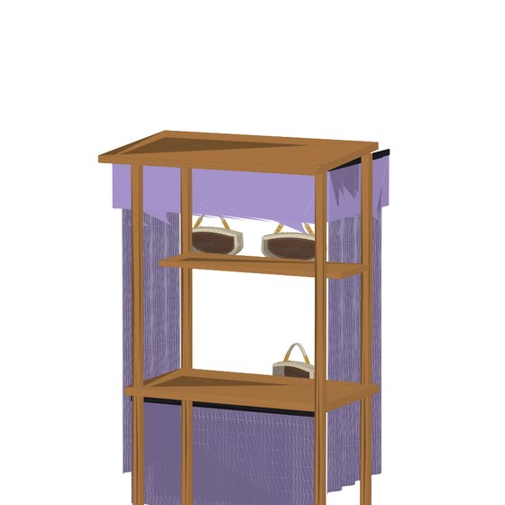
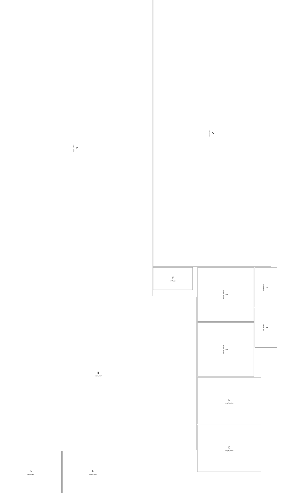

The design pipeline is built and working — a sketch becomes a costed, cut-ready pattern in seconds. This site is where the project stands, the ten-week plan, and the brief for designing the first real purse.
Draft — pending Erika's reviewEvery stage of the software pipeline works, end to end. A sketch or photo becomes a costed, cut-ready pattern in about 17 seconds.
Three tracks run side by side. Purses turn the software into physical product. The book keeps its writing cadence and feeds the brand story. Grants aim everything at the Motor City Match Round 33 deadline on October 1.
Prototypes → small batch → a real launch with real customers by week 10. Every purse-track task moves a bag from a render to something someone buys.
Amber Grant monthly entries plus one serious swing at Motor City Match (grants average ~$50k). Grant money buys materials, equipment, and batch capacity — not loan payments.
The book and the bags tell one Detroit story. Process photos feed the book; the book's excerpt feeds the launch; the launch feeds the grant narrative.
The pipeline already turns a sketch into a costed pattern in 17 seconds. Every new design is nearly free to spec — spend the money on fabric and thread, not drafting time.
The flywheel: the book builds the story → the story sells purses and strengthens grant applications → grants fund production → production gives the book its material. Each week's tasks push the same wheel.
Erika: answer these ten in order — they move from the feeling to the form. Short answers are perfect; a voice memo counts. Then one page of sketching. The pipeline turns whatever you hand over into a 3D model, a pattern, and a cost sheet the same day.
Three words for the woman carrying this bag. This is the whole design in miniature — everything else has to earn those three words.
e.g. “unstoppable, playful, put-together” · “soft, easy, warm”One scene. The place tells us formality, weather, and how hard the bag works.
e.g. Eastern Market on a Saturday · gallery opening · airport gate · first dateList everything it must swallow. This decides pockets and honesty about size.
e.g. phone, keys, lipstick, sunglasses · or: laptop, water bottle, a paperbackCompare it to a real object instead of inches — we'll take the measurements from there.
e.g. “a vinyl record” · “a hardcover book” · “a lunchbox” · “a magazine”Shoulder, crossbody, in the hand, under the arm — or convertible? Strap length changes the whole silhouette.
e.g. “crossbody, hands free at the market, but a short handle too”Structured like a frame bag, soft like a hobo, or somewhere between? This picks the materials' backbone.
e.g. “stands up on the table by itself” · “melts against the hip”Three colors max: the body, the accent, the hardware. Name the one loud thing — every good bag has exactly one.
e.g. “cognac body, cream stitch, brass” · “black on black, one coral zipper”Close your eyes and touch it. Crisp canvas, buttery leather, structured felt, waxed and rugged?
e.g. “smooth and cool like a saddle” · “sturdy canvas that softens with age”The theme. Collection 01 is all Detroit — is this bag part of that story, or its own thing?
e.g. “the Riverwalk at dusk” · “grandma's Sunday best” · “first snow on Second Ave”The thing a stranger notices and says “where did you get that?” One detail, done perfectly, beats five done okay.
e.g. a painted edge · an unexpected lining print · a hand-stamped rivet · the stitch colorFrom there: sketch → 3D model → flat pattern → felt fit-check you can hold → real-fabric prototype. Weeks 1–4 of the plan.
Don't start from a blank page — point at one of these, or mash two together (“bucket body, saddle flap”). Each makes a very different bag from the same ten answers.
Every bag as a real 3D file. View in 3D spins it right here — drag to rotate, pinch or scroll to zoom. Download grabs the .glb (all under 1 MB); it opens in Blender, on an iPhone (AR Quick Look via a converter), or any glTF viewer.
To add a model to this page permanently: on GitHub, open docs/models → “Add file” → “Upload files”. New .glb files show up here automatically on the next visit. Optional matching preview image: same name as a .jpg in docs/thumbs.
The interactive viewer needs the public site (it loads Google's model-viewer library); in a restricted preview you'll see stills and download links only.
A knock-down book stand that packs into three padded wraps and sets up as the sales booth — the wraps themselves become the roof valance, side curtains, and counter skirt. Carry it. Assemble it. Dress it. Sell from it. The purses go on the shelf; the whole shop fits in a sedan.
Open the CAD (Autodesk Viewer) Tech pack Download .glb

One fastening system — the wraps grommet onto the stand's existing ¼"-20 star knobs. Hand-tight plus a quarter turn; removes in seconds.
| Wrap | Carries | Packed | Unwrapped | Becomes |
|---|---|---|---|---|
| A — base | Deck, front panel/chalkboard, stretchers, hardware pouch | 36×31×6½" | 54×24" | Front counter skirt |
| B — left side | Left panel, shelf, post, shutter | 20×31×6½" | 40×31" | Left side curtain |
| C — right + roof | Right panel, counter top, post, roof, sign | 40×31×7½" | 60×31" | Right curtain + roof valance |
Construction: 600D solution-dyed polyester (PVC-backed) over ⅛" closed-cell foam with a tricot liner, edges bound in 1" webbing, double-stitched with UV poly V-92 thread. Weather-, UV-, and abrasion-resistant.
Straight from the pipeline: every piece nested on the roll, yardage and draft cost computed per kit. Full pattern sheet: color-me-art-wraps_pattern.svg.

Outer — 600D poly, 58 in roll3.05 yd/kit · 90.0% utilization · $38.15 draft| Hardware (per kit) | Qty | Spec |
|---|---|---|
| Grommets | 72 | ½" ID nickel brass, set through 2×2" webbing reinforcement, every 6–8" |
| Webbing, 1" nylon | 22 yd | Edge binding + carry handles + compression straps, black |
| Quick-release buckles | 6 | 1" side-release, two per wrap |
| Star knobs + studs | 12 + 12 | ¼"-20, mate to the stand's existing hanger studs |
| Zipper | 1 | #5 coil, 12", hardware pouch |
| Thread | — | UV-stable poly V-92 (Tex 90), min 5 SPI, seams double-stitched |
The fabrication path from pattern to a sellable small batch, the Detroit people who can do each step, what to ask them, and what it should cost. Contacts verified September 6, 2026 — confirm before relying on any number.
Eight steps, in order. Weeks match the ten-week plan.
| Step | What happens | Who / where | You hand over | Wk |
|---|---|---|---|---|
| 1 Lock the design | Answer the ten-question brief; pick the 3 hero bags. | Erika + Richard | Brief answers, sketch photo | 1 |
| 2 Pattern | Pipeline exports the flat pattern (SVG in mm, 10 mm seam allowance) and DXF; curate seams so every piece has a name. | Richard (pipeline) | SVG + DXF, tech pack | 1 |
| 3 Felt fit-check | Laser-cut the pattern in felt, tape it up, check proportions and handle placement. Mark corrections. Repeat once. | Ponoko (mail-order) or The Hawk laser | SVG/DXF upload | 1–3 |
| 4 Source materials | Buy 2 yd of the real fabric, lining, zipper, D-rings, chain, thread. Get written 50-unit quotes. | Haberman, Tandy, Buckleguy / Ohio Travel Bag | Real prices into the cost sheets | 2 |
| 5 Prototype #1 | Sew one bag in real fabric — yourself at a makerspace, or pay a factory first-sample fee. Photograph every step. | The Hawk sewing lab, or ISAIC | Pattern, materials, tech pack | 4 |
| 6 Wear-test + v2 | Carry it a week. Fix what annoys you. Sew prototype #2 and the second silhouette. | Erika | Notes → pattern v2 | 5–6 |
| 7 Quote the batch | Send the handoff kit to 2–3 shops. Ask for 10 / 25 / 50 unit pricing and lead time. Pick one. | ISAIC, Pingree, Soft Goods Detroit | Handoff kit | 7 |
| 8 Make + sell | Approve the pre-production sample, run ~10 units, inspect every bag, price it, launch. | Chosen shop; Eastern Market | Signed sample, PO | 8–10 |
Call in this order. Detroit Sewn (Pontiac) was removed — it closed in February 2024.
Industrial Sewing and Innovation Center — nonprofit factory + training center, Midtown
Ask: Do you take bags with hardware? Sample fee? Minimum run? Lead time? Can you set grommets and rivets in-house? What file formats do you want?
Worker-owned co-op — handmade bags and footwear from upcycled automotive leather
Ask: Outside patterns or only your own designs? Can we use your upcycled leather for a hero bag? Price at 10 / 25 / 50? Email product, quantity and timeline — that's what they ask for.
Cut-and-sew factory, New Center — sews for Shinola, StockX, American Trench
Ask: Structured bags, or apparel only? If not, who in Detroit do you send bag work to?
Social enterprise — sewing training and small-batch apparel manufacturing, Metro Detroit
Ask: Do you sew bags with hardware? Sample fee and minimums?
Luxury leather factory — the Argonaut Building, New Center
Do: Walk the store; note stitch density, edge paint, hardware finish, price points.
City of Farmington Hills — inside The Hawk Community Center
Ask: Day-pass price? Orientation needed for the industrial machines / laser? Can the laser cut 3 mm felt and 10 oz canvas? Bed size (largest piece ≈ 320 × 200 mm)?
Community makerspace, northwest Detroit (U-M partnership)
Ask: Adult open hours? Sewing machines? Laser?
Member-run hackerspace in Eastern Market
Do: Show up Thursday night with the pattern SVG on a USB stick and ask to cut a felt test.
Online laser cutting — upload the SVG, instant quote, felt in stock
Independent fabric store — canvas, duck, linings, interfacing, zippers
Ask: 10–12 oz canvas or duck in the collection colors? Bolt price per yard? Lead time on a special-order color?
Leather, hardware, tools, classes
Ask: Price per sq ft on a 2–3 oz chrome-tan side? Business / wholesale account?
Online hardware at maker quantities (chain, D-rings, zipper sliders, feet): buckleguy.com and ohiotravelbag.com. Also: Maker Works, Ann Arbor, as the fallback makerspace.
City of Detroit grant + technical assistance program
Have ready: one-page business plan, budget, LLC/EIN, product photos (use the Collection 01 renders), letters of support. Submit by Sept 30.
Nonprofit business hub — Retail Boot Camp, Comerica Hatch Detroit ($100k), Coaching Up, Detroit Elevate
Ask: Next Retail Boot Camp cohort? Hatch Detroit entry dates? Can Coaching Up review the Motor City Match application?
Free, confidential consulting for Wayne, Oakland, Macomb (hosted at EMU)
Do: Register online first; ask for a consultant who has worked with product/maker businesses.
Artisan market, June–September, Sundays 10–4, Shed 5
Ask: Artisan fee and application deadline for the 2027 season? Any fall/holiday market dates still open in 2026?
National monthly grant for women-owned businesses
Do: Apply every month. Also register at ifundwomen.com and helloalice.com.
| # | Question | Why it matters |
|---|---|---|
| 1 | Do you make structured bags with hardware, or apparel only? | Saves the call if it's the wrong shop. |
| 2 | What is your first-sample fee and how long does it take? | Typical $150–500; 2–4 weeks. |
| 3 | Minimum order, and price per unit at 10 / 25 / 50? | Unit price usually drops 30–40% from 10 to 50. |
| 4 | Can you set grommets, rivets and D-rings in-house? | Otherwise you finish them yourself. |
| 5 | Do you source materials or do we supply them (cut-make vs. full package)? | Changes cash flow and who owns fabric risk. |
| 6 | What files do you want — SVG, DXF, PDF, tech pack? | We have all four ready. |
| 7 | Do you cut by laser, die, or hand? Any width limits? | Our pattern is nested for 54-in fabric. |
| 8 | Lead time from approved sample to finished batch? | Plan says launch in week 10. |
| 9 | What is your defect / rework policy? | Ask before, not after. |
| 10 | Can we visit the floor while our sample is sewn? | Photos for the book and the grant application. |
| 11 | Do you have a leather sewist or leather machines (walking foot, cylinder arm)? | Needed for the leather versions. |
| 12 | Can you also quote the three padded 600D booth wraps? | One vendor for both saves setup fees. |
“Hi, I'm Erika, I'm launching a Detroit-made handbag line. I have finished patterns, a tech pack and a sewn prototype for a structured canvas bag with chain hardware. I'm looking for a first sample and pricing for 10, 25 and 50 units, and I'd like to know your sample fee, minimum and lead time. Who should I send the files to?”
Material figures come from the pipeline takeoffs (draft prices). Labor and fees are market estimates for a small Detroit shop — every quote you collect replaces a line here.
| Per bag | Canvas | Leather | Note |
|---|---|---|---|
| Body + trim fabric | $3.82–7.05 | $25–45 | Pipeline takeoff at $18/yd placeholder; leather at $8–12/sq ft |
| Lining + interfacing | $3–5 | $4–6 | Estimate |
| Hardware (chain, 2 D-rings, zipper, slider, pull) | $8–15 | $10–20 | Buckleguy / Ohio Travel Bag |
| Thread, edge paint, packaging | $1–3 | $2–5 | Estimate |
| Materials subtotal | $16–30 | $41–76 | |
| Contract sewing labor, 10-unit run | $35–60 | $60–110 | Structured bag with hardware |
| Contract sewing labor, 50-unit run | $25–40 | $45–80 | Setup amortized |
| Landed cost at 50 units | $41–70 | $86–156 | |
| Suggested retail (2.2–2.5× landed) | $120–175 | $220–390 | Check against Detroit makers at Eastern Market |
| One-time and fixed | Estimate | Note |
|---|---|---|
| Felt fit-check (laser, per pattern) | $15–40 | Ponoko instant quote, or one Hawk day pass |
| Factory first sample (per style) | $150–500 | A finished pattern + tech pack should land at the low end |
| Makerspace pass | day $10–25 / month $40–80 | Estimate — confirm at fhgov.com/makerspace |
| Prototype materials (2 yd fabric + hardware) | $60–120 | Haberman + online hardware |
| Booth wraps materials, per kit | $74.68 | Pipeline takeoff (draft): outer $38.15, liner $11.88, foam $24.65 |
| Booth wraps hardware (72 grommets, 22 yd webbing, 6 buckles, knobs) | $90–140 | Estimate |
| Booth wraps contract sewing (3 padded wraps) | $150–300 | Ask ISAIC to quote with the bags |
| Eastern Market Sunday artisan booth | $40–100 / day | Estimate — ask the market manager |
| Amber Grant application | $15 | Monthly |
| Michigan LLC filing + EIN | $50 + $0 | Needed for every grant, if not already done |
| Item | Where it lives | Status |
|---|---|---|
| Pattern pieces, SVG in millimetres, 10 mm seam allowance, every piece named | patterns/<bag>/ | Pipeline output; curate seams first |
| DXF of the same pieces for laser / CNC cutting | patterns/<bag>/ | Pipeline output |
| Nested cut layout at 54 in with utilization and yardage | takeoffs/<bag>/ | Pipeline output |
| Tech pack: dimensions, piece list, materials, hardware BOM, construction notes | techpack/<bag>.md | Fill construction notes while sewing prototype #1 |
| Sewn prototype — the shop copies what it can touch | Erika | Week 4 |
| Photos: front, back, inside, hardware close-ups | designs/<bag>/ | Weeks 4–6 |
| Material swatches with supplier + SKU; hardware samples in a bag | Physical | Week 2 |
| Quantity, target unit cost, need-by date, ship-to address | One page | Week 7 |
Not published by the shops and therefore left blank: phone numbers for Soft Goods Detroit, D'Artillery, OmniCorp and Maker Works — use their websites. The Argonaut Building address is the College for Creative Studies' Taubman Center; confirm Shinola's visitor entrance before visiting.